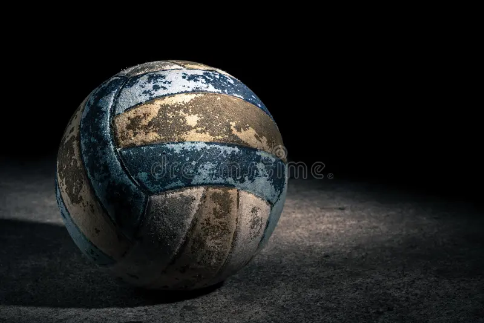
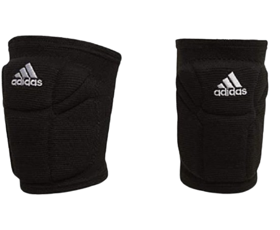
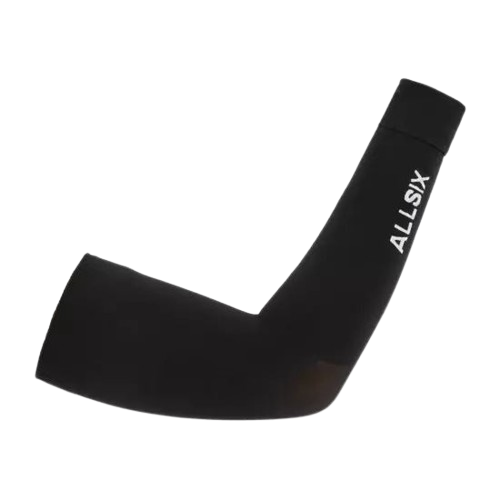
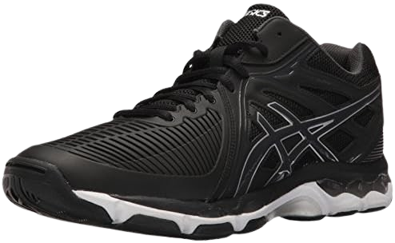
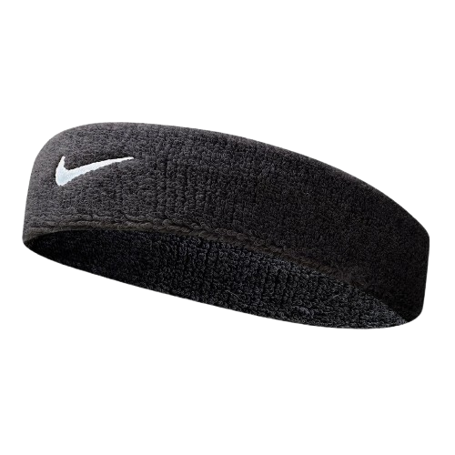

Cancha de Juego
La cancha de voleibol mide 18 m × 9 m y está hecha de madera pulida o materiales sintéticos como caucho o linóleo para facilitar movimientos rápidos y amortiguar caídas. Incluye una línea central, una zona de ataque a 3 m de la red y una zona libre de 3 m (5 m en competiciones internacionales) alrededor del campo. La altura libre mínima es de 7 m (12.5 m en torneos profesionales) para evitar obstáculos aéreos.

Balón
El balón de voleibol está hecho de cuero genuino o material sintético (polipropileno) con paneles texturizados para un mejor agarre. Tiene una circunferencia de 65–67 cm, un peso de 260–280 g y una presión interna de 0.30–0.325 kg/cm² para un rebote óptimo. Su diseño incluye paneles hexagonales y colores contrastantes (como blanco/amarillo) para mayor visibilidad.

Red
La red de voleibol está hecha de polipropileno y mide 10 cm de ancho, con bandas blancas de 5–7 cm en los bordes. Se coloca a una altura de 2.43 m para hombres y 2.24 m para mujeres (2.14 m en juveniles). Incluye antenas de fibra de vidrio de 1.8 m que delimitan el espacio aéreo válido, y los postes se ubican a 0.5–1 m fuera de la cancha.

Antenas
Las antenas son varillas flexibles de fibra de vidrio o plástico de 1.8 m de largo, con 80 cm visibles sobre la red. Marcan los límites verticales del espacio por donde debe pasar el balón. Si el balón toca las antenas o pasa fuera de ellas, se considera falta.

Rodilleras
Las rodilleras están diseñadas con almohadillas de gel o espuma de alta densidad para absorber impactos durante caídas o desplomes. Son esenciales en categorías profesionales debido a los frecuentes contactos con el suelo en defensas y recepciones.

Manguitos
Los manguitos protegen los antebrazos durante el voleo bajo (recepción de saques) y mejoran el control del balón. Están hechos de tejidos compresivos como spandex o poliéster, con costuras planas para evitar rozaduras.

Zapatillas
Las zapatillas de voleibol tienen suela de goma adherente con patrón herringbone para tracción en superficies lisas y cambios rápidos de dirección. Incluyen tecnología de aire o gel en el talón para reducir el impacto en saltos repetitivos.

Equipación
La equipación está hecha de poliéster transpirable con tratamiento antibacterial para gestionar el sudor. El líbero usa un uniforme de color contrastante y tiene restricciones como no poder realizar saques ni bloquear.

Cinta para la cabeza
La cinta para la cabeza está hecha de elástico suave (microfibra) con acabado antideslizante para mantenerse en posición durante movimientos bruscos. Algunas incluyen lemas motivacionales o banderas de equipos para identificación visual.